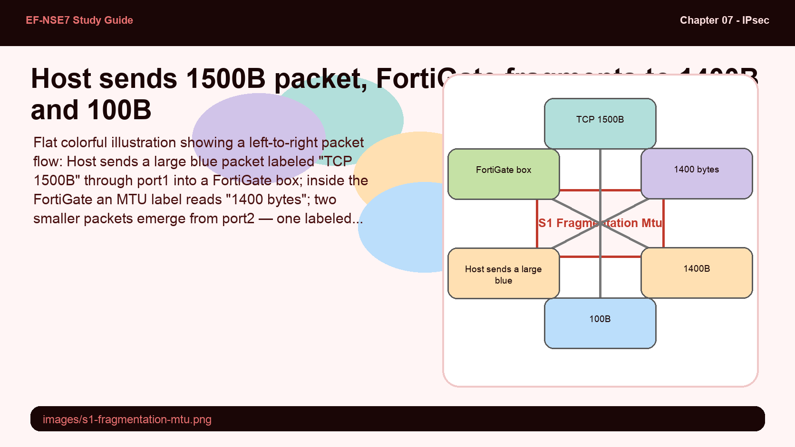
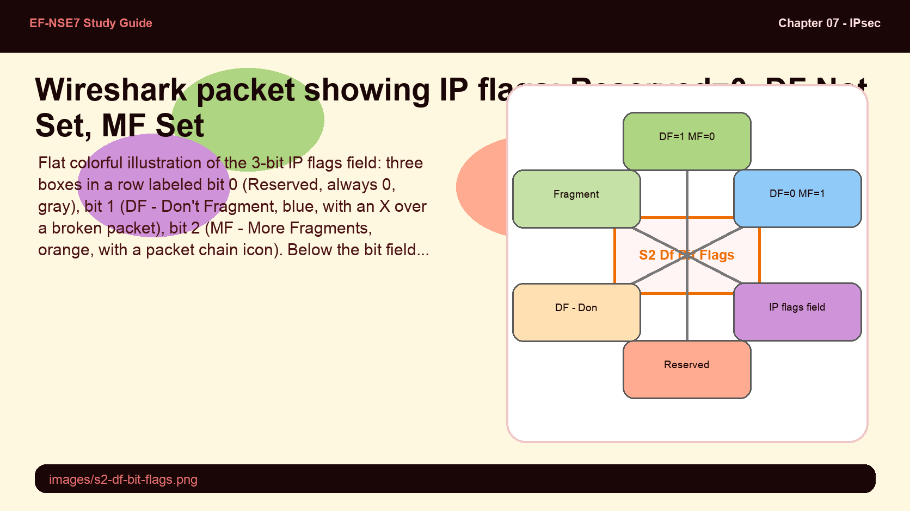
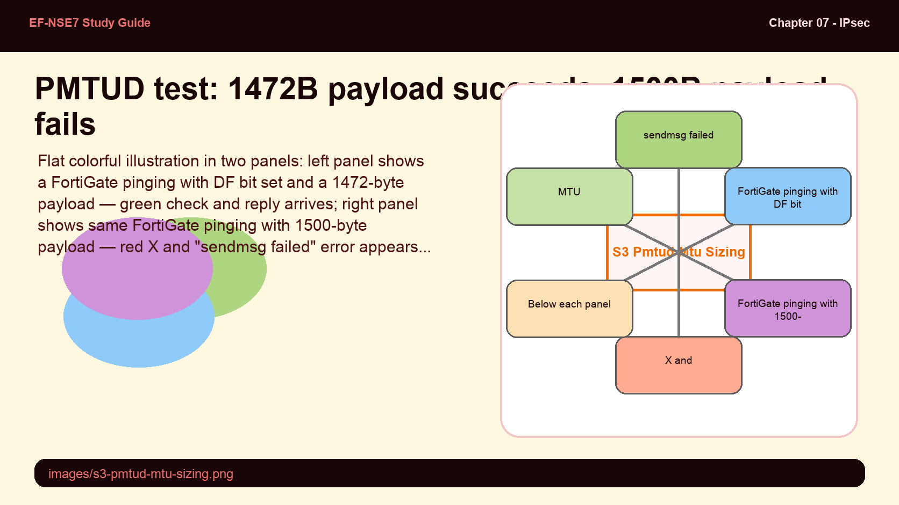
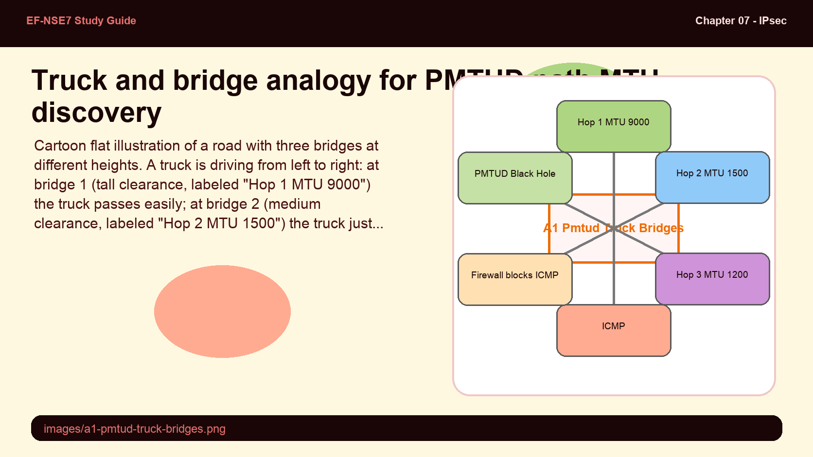
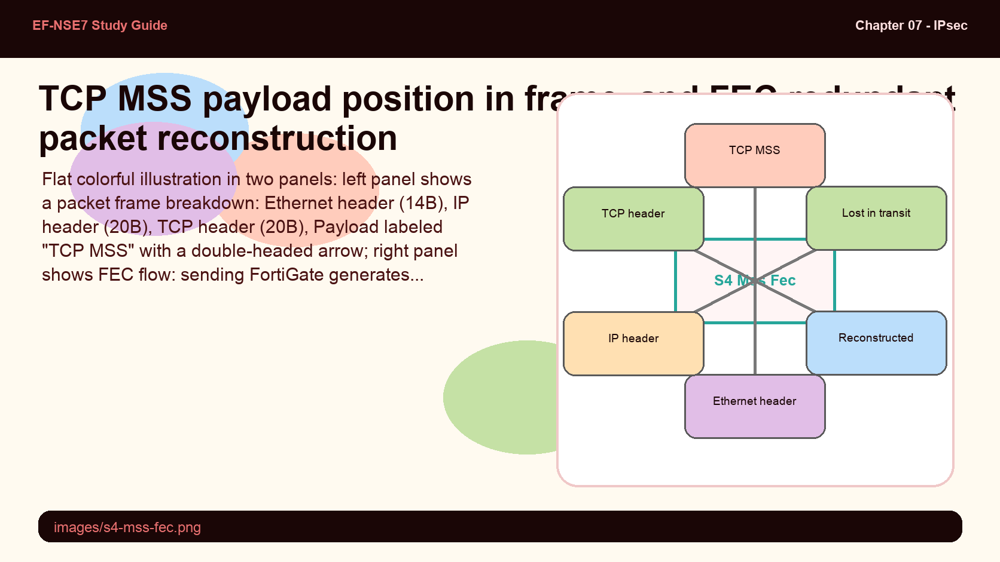

Diagnose and fix the most common IPsec failure modes — MTU fragmentation, IP flag behavior, PMTUD black holes, FEC for lossy links, and TCP MSS clamping — using FortiGate CLI tools.
Most IPsec "tunnel down" calls are actually MTU and fragmentation problems in disguise.
This subtopic covers the packet-layer issues that silently break IPsec after Phase 2 completes — and the FortiOS tools that diagnose and fix them.
💭THINK FIRST · IP FRAGMENTATION & MTU
IPsec adds overhead to every packet — at minimum an IP header (20 bytes) plus ESP or AH headers. If the original packet plus this overhead exceeds the outgoing interface MTU, the packet must either be fragmented or dropped. Which one happens depends on a single bit in the IP header.
Why does adding IPsec encapsulation to an already-1500-byte packet create a fragmentation problem, and why can't the sending host simply "not send packets that large"?
Fragmentation reassembly happens at the destination — not along the path. What happens if a fragment is lost in transit, and what does this mean for UDP vs TCP flows?
Q1 — MODEL ANSWER
The sending host negotiates its TCP MSS with the server based on local interface MTU — it has no visibility into the IPsec encapsulation that will be added downstream. From the host's perspective, a 1460-byte TCP payload with a 40-byte IP+TCP header = 1500 bytes, fitting perfectly in Ethernet MTU. But when FortiGate wraps it in ESP, the total exceeds 1500 bytes, causing a problem the host couldn't have predicted.
Q2 — MODEL ANSWER
If any fragment is lost, the entire original packet must be retransmitted — there is no way to request only the missing fragment. TCP handles this with its retransmission mechanism (at the cost of latency). UDP has no retransmission at the transport layer — a lost fragment means permanently lost data, which can corrupt application-layer payloads like RADIUS, DNS, or RTP streams silently.
SECTION 01
IP Fragmentation and MTU Overhead

📷 images/s1-fragmentation-mtu.png
1500B TCP packet fragmented at FortiGate (MTU=1400) into 1400B + 100B fragments.
Flat colorful illustration showing a left-to-right packet flow: Host sends a large blue packet labeled "TCP 1500B" through port1 into a FortiGate box; inside the FortiGate an MTU label reads "1400 bytes"; two smaller packets emerge from port2 — one labeled "1400B" and one labeled "100B" — traveling to a Server on the right. Below the FortiGate, a TCP acknowledgement arrow returns from Server to Host. Pastel blue and orange palette, bold outlines, clear size labels, educational infographic feel.
IP fragmentation occurs when a packet exceeds the network's Maximum Transmission Unit (MTU) — the largest packet size an interface can transmit. The default Ethernet MTU is 1500 bytes.
When FortiGate receives a packet larger than the outgoing interface MTU, it must fragment the packet — splitting it into multiple smaller packets, each with its own IP header. The destination host reassembles them. This process reduces throughput, adds latency, and risks data loss if any fragment is dropped.
IPsec adds encapsulation overhead to every packet — ESP headers, an outer IP header, and optionally NAT-T UDP headers. This overhead pushes previously acceptable packet sizes over the MTU threshold, triggering unexpected fragmentation even when the original endpoints thought they were sending correctly-sized packets.
Protocol
Overhead Added
Layer
GRE (RFC 2784)
24 bytes
Layer 3
VXLAN
50 bytes
Layer 4
NVGRE
42 bytes
Layer 4
6in4 (RFC 4213)
20 bytes
Layer 3
4in6 (RFC 6333)
40 bytes
Layer 3
MPLS
4 bytes per label
Layer 2
PPPoE
8 bytes
Layer 2
When encapsulation protocols are in use, you have three options to resolve fragmentation: increase the MTU on the interface, adjust the TCP MSS in the firewall policy, or set the fragmentation MTU in IPsec Phase 1.
Exam warning: IPsec encapsulation overhead pushes packets over MTU even when the original host sends correctly-sized frames. The host cannot know about downstream encapsulation — FortiGate must compensate at the policy or interface level.
🧠
MENTAL NOTE
Standard Ethernet MTU = 1500 bytes. IPsec adds 20–60+ bytes of overhead depending on ESP, outer IP, NAT-T. Fragmentation splits oversized packets; lost fragments = retransmit (TCP) or data loss (UDP). Fix via MTU increase, TCP MSS clamp, or IPsec Phase 1 fragmentation MTU.
ASK A QUESTION
ADD A NOTE
💭THINK FIRST · IP FLAGS & DF BIT
The IP header contains a 3-bit flags field that controls fragmentation behavior. The "Don't Fragment" (DF) bit is the key troubleshooting signal — when it's set and the packet is too large, the router must drop the packet and send back an ICMP "fragmentation needed" message. If that ICMP is blocked by a firewall, the sender never learns the packet was dropped — creating a "black hole."
FortiOS honors the DF bit by default — meaning it drops oversized packets that have DF set rather than fragmenting them. Why is this the correct behavior, and when would you override it?
What is an "ICMP black hole" in the context of PMTUD, and why do misconfigured firewalls cause it?
Q1 — MODEL ANSWER
Honoring DF respects the sender's intent — the application or OS has decided that fragmenting this packet would cause problems (e.g., certain real-time protocols break across fragments). If FortiGate silently fragments a DF-set packet, the receiving end may reassemble it incorrectly or not at all. The correct behavior is to drop and send ICMP "fragmentation needed" so the sender can reduce packet size. Override (honor-df disable) only when a legacy endpoint misbehaves.
Q2 — MODEL ANSWER
PMTUD relies on ICMP Type 3, Code 4 ("fragmentation needed, DF set") messages traveling back to the sender. If any firewall in the path blocks ICMP, the sender never receives this feedback, so it keeps sending large packets that are silently dropped. The TCP connection appears to establish but then hangs when larger data packets are sent — classic PMTUD black hole behavior.
SECTION 02
IP Flags — DF Bit and Fragmentation Control

📷 images/s2-df-bit-flags.png
IP flags 3-bit field: bit 0 reserved (always 0), bit 1 = DF (don't fragment), bit 2 = MF (more fragments).
Flat colorful illustration of the 3-bit IP flags field: three boxes in a row labeled bit 0 (Reserved, always 0, gray), bit 1 (DF - Don't Fragment, blue, with an X over a broken packet), bit 2 (MF - More Fragments, orange, with a packet chain icon). Below the bit field, two rows: first row "DF=1 MF=0" shows a single intact packet being blocked at a router with a drop icon and ICMP arrow going back; second row "DF=0 MF=1" shows a packet being split into multiple fragments with arrows continuing to destination. Pastel palette, bold outlines, educational infographic feel.
The IP header contains a 3-bit flags field that controls fragmentation behavior:
Bit 0 (Reserved): Always set to 0.
Bit 1 — DF (Don't Fragment): When set (1), the packet must not be fragmented. If the packet is too large, the router drops it and returns an ICMP "fragmentation needed" message.
Bit 2 — MF (More Fragments): Set on all fragments except the last one. When MF=1, the receiver knows more fragments are coming.
You can identify fragmented packets in Wireshark or PCAP using the display filter: ip.flags.mf == 1
Fragmentation occurs when a packet's size exceeds the MTU along its path. FortiOS defaults to honoring the DF bit — meaning FortiGate will drop rather than fragment a packet with DF=1 that exceeds the interface MTU. For example, a 1600-byte packet on a 1500-byte MTU interface with DF set will be dropped, not fragmented.
FortiGate CLI — Honor DF Bit
config system global
set honor-df enable
end
Exam tip: FortiOS honors DF by default. A 1600-byte packet on a 1500-byte MTU interface with DF=1 will be dropped, not fragmented. Use ip.flags.mf == 1 in Wireshark/PCAP to filter fragmented packets.
🧠
MENTAL NOTE
3 IP flags: Bit0=Reserved(0), Bit1=DF(don't fragment), Bit2=MF(more fragments). FortiOS: honor-df enable by default → drops oversized DF packets, returns ICMP. PCAP filter: ip.flags.mf == 1 shows fragmented packets. MF=1 on all fragments except the last.
ASK A QUESTION
ADD A NOTE
💭THINK FIRST · PMTUD & MTU SIZING
Path MTU Discovery (PMTUD) dynamically finds the largest packet size that can traverse the entire path without fragmentation. It works by setting DF=1 on test packets and progressively reducing size when ICMP "fragmentation needed" messages come back. The problem: if those ICMP messages are blocked anywhere in the path, PMTUD fails silently.
A payload of 1472 bytes succeeds in a FortiGate PMTUD test but 1500 bytes fails. What does this tell you about the effective path MTU, and how do you calculate the actual MTU from these results?
Why is modifying MTU on internet-facing interfaces "nearly impossible," and what does this mean for how you should resolve MTU issues on an IPsec tunnel?
Q1 — MODEL ANSWER
A 1472-byte payload plus the 28-byte IP+ICMP header = 1500 bytes total — exactly the standard Ethernet MTU. A 1500-byte payload plus 28-byte headers = 1528 bytes, which exceeds 1500 and gets dropped. This confirms the path MTU is 1500 bytes. The formula is: payload + 28 (IP header 20 + ICMP header 8) = effective packet size. If that equals or exceeds the MTU, it fails.
Q2 — MODEL ANSWER
Internet-facing interfaces traverse ISP infrastructure you don't control — you cannot change the MTU at every hop between you and the destination. For IPsec tunnels, the solution is to configure MTU on the FortiGate's IPsec VPN interface directly (range 68–1700, default 1420) or to set TCP MSS clamping in the firewall policy to reduce segment size before encapsulation adds its overhead.
SECTION 03
PMTUD and MTU Size Adjustments

📷 images/s3-pmtud-mtu-sizing.png
Path MTU Discovery: progressively test payload sizes until packets stop being dropped to find the effective path MTU.
Flat colorful illustration in two panels: left panel shows a FortiGate pinging with DF bit set and a 1472-byte payload — green check and reply arrives; right panel shows same FortiGate pinging with 1500-byte payload — red X and "sendmsg failed" error appears. Below each panel, packet size breakdowns: "1472 data + 28 header = 1500 total — fits MTU" and "1500 data + 28 header = 1528 total — exceeds MTU". An MTU bar diagram sits between panels showing the 1500-byte limit line. Pastel green and red palette, bold outlines, educational infographic feel.
Path MTU Discovery (PMTUD) determines the largest packet size that can traverse the complete network path without fragmentation. It works by sending packets with DF=1 set and listening for ICMP "fragmentation needed" responses.
A 1472-byte payload succeeds (1472 + 28 header bytes = 1500 total = exact Ethernet MTU). A 1500-byte payload fails (1500 + 28 = 1528 — exceeds MTU). This confirms the path MTU is 1500 bytes.
To adjust MTU on a FortiGate interface:
FortiGate CLI — Interface MTU
config system interface
edit "wan2"
set vdom "root"
set mtu-override enable
set mtu 1700
next
end
diagnose hardware deviceinfo nic <interface>
MTU configuration ranges: physical interface — 68 to 65535 bytes (default 1500). IPsec VPN interface — 68 to 1700 bytes (default 1420). Changing MTU on internet-facing interfaces is impractical because you cannot control intermediate ISP hops.
Note: The IPsec VPN interface default MTU is 1420 bytes — accounting for IPsec encapsulation overhead within a standard 1500-byte Ethernet path. If your underlay uses jumbo frames, you can increase this value.
PMTUD is like a truck driver testing which roads can handle their load before the delivery — driving increasingly smaller trucks until one fits under every bridge.
MTU on each network hop — the clearance height of bridges along the route; the lowest bridge sets the limit
DF=1 (Don't Fragment) — the driver refuses to unload and reload cargo at every bridge; if the truck doesn't fit, turn back
ICMP "fragmentation needed" — a bridge officer sends a radio message: "your truck is too tall, try a shorter one"
ICMP black hole — the bridge officer is silenced (firewall blocks ICMP), the driver keeps sending the oversized truck and wonders why deliveries never arrive

📷 images/a1-pmtud-truck-bridges.png — add this image to the folder
Cartoon flat illustration of a road with three bridges at different heights. A truck is driving from left to right: at bridge 1 (tall clearance, labeled "Hop 1 MTU 9000") the truck passes easily; at bridge 2 (medium clearance, labeled "Hop 2 MTU 1500") the truck just fits; at bridge 3 (low clearance, labeled "Hop 3 MTU 1200") the truck is too tall and a red X appears. A bridge officer in a small booth holds a radio labeled "ICMP". An inset shows a second scenario where the officer's radio is crossed out (labeled "Firewall blocks ICMP") and an endless queue of oversized trucks labeled "PMTUD Black Hole". Pastel orange and teal palette, bold outlines, short labels, educational infographic feel.
ASK A QUESTION
ADD A NOTE
💭THINK FIRST · TCP MSS & FEC
TCP MSS clamping and Forward Error Correction (FEC) solve two distinct problems. MSS clamping prevents oversized TCP segments from being generated in the first place — fixing fragmentation before it happens. FEC adds redundant data to recover from packets that are lost in transit — fixing the consequences of bad WAN links without requiring retransmission.
TCP MSS does not include TCP or IP headers — only the payload. Why does lowering the MSS increase the total number of packets, and when does this trade-off become harmful?
FEC increases bandwidth usage. Under what WAN conditions is this overhead worthwhile, and what applications benefit most?
Q1 — MODEL ANSWER
Lowering MSS means each TCP segment carries less application payload — so the same amount of data requires more segments, each with its own 40-byte IP+TCP header. This increases header overhead as a percentage of total bytes sent, reducing effective throughput. It becomes harmful on high-bandwidth links where the per-packet processing cost multiplied by many more packets creates measurable CPU load and latency.
Q2 — MODEL ANSWER
FEC overhead is worthwhile on lossy or noisy WAN links — satellite, LTE, or microwave radio — where retransmission costs are high (due to high latency or jitter). Real-time applications like VoIP and video conferencing benefit most because they cannot tolerate the latency of TCP retransmission — they need immediate reconstruction of lost packets at the receiver, which FEC enables without requesting a resend.
SECTION 04
TCP MSS Clamping and Forward Error Correction

📷 images/s4-mss-fec.png
TCP MSS = payload only (not headers). FEC adds redundant packets to reconstruct lost data at the receiver.
Flat colorful illustration in two panels: left panel shows a packet frame breakdown: Ethernet header (14B), IP header (20B), TCP header (20B), Payload labeled "TCP MSS" with a double-headed arrow; right panel shows FEC flow: sending FortiGate generates packets A, B, C, D plus a redundant green packet; receiving FortiGate receives A, X (lost/corrupted), C, D and the redundant packet; arrow shows reconstruction to A, B, C, D. Labels: "Lost in transit" over X, "Reconstructed" over recovered B. Pastel blue and green palette, bold outlines, educational infographic feel.
The TCP Maximum Segment Size (MSS) specifies the maximum amount of TCP payload data — not including TCP or IP headers — in a single segment. It is configured in firewall policies and affects the largest payload a device can send in one TCP segment.
FortiGate CLI — TCP MSS in Firewall Policy
config firewall policy
edit <policy id>
set tcp-mss-sender <mss value>
set tcp-mss-receiver <mss value>
next
end
Lowering MSS reduces TCP segment payload size, which increases packet count. More packets mean more processing overhead and reduced effective throughput. The trade-off: properly sized MSS prevents fragmentation without requiring MTU changes, but incorrect MSS settings cause mismatches and flow problems. Typical IPsec MSS value = 1460 − IPsec overhead ≈ 1360–1400 bytes.
Forward Error Correction (FEC) is a Phase 1 IPsec setting that adds redundant packets to the tunnel. The receiving FortiGate uses the redundant information to reconstruct any lost or corrupted packets without requiring retransmission from the sender.
FEC increases bandwidth usage (redundant packets use extra capacity).
FEC improves reliability on lossy WAN links — satellite, LTE, microwave radio.
FEC is critical for voice and video services where retransmission latency is unacceptable.
Note: FEC is configured in Phase 1 tunnel settings. It is not a default-on feature — enable it only on tunnels over WAN links with known packet loss or jitter. On clean fiber WAN links, FEC overhead provides no benefit.
🧠
MENTAL NOTE
TCP MSS = payload only, configured per firewall policy (tcp-mss-sender / tcp-mss-receiver). Lower MSS = more packets = more overhead. FEC = Phase 1 setting, adds redundant packets, reconstructs lost data without retransmit. FEC best for lossy WAN (satellite, LTE), voice/video. Not needed on clean links.